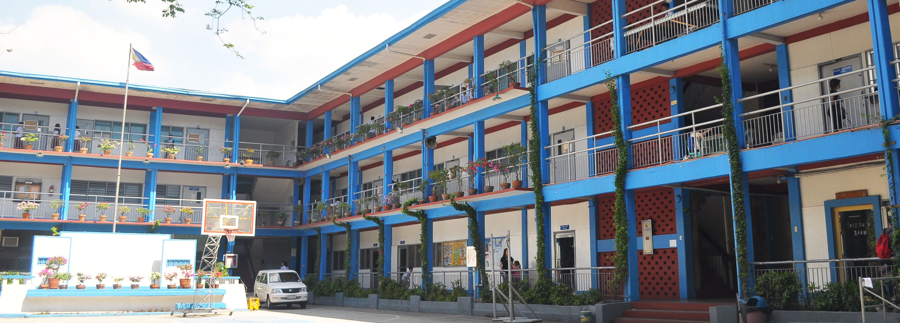

Arellano University Plaridel Campus(AUPC)

About Arellano University
This prestigious institution of learning opened in 1938 as the Arellano Law College, named after Cayetano Arellano, first Filipino chief justice. It closed in December 1941 until March 1945 under the Japanese occupation of the Philippines during World War II. At the end of the war, this educational institution reopened in April, 1945 and was renamed as Arellano Colleges offering a two-year preparatory law course and the regular four-year law course, as well as a complete secondary education curriculum.